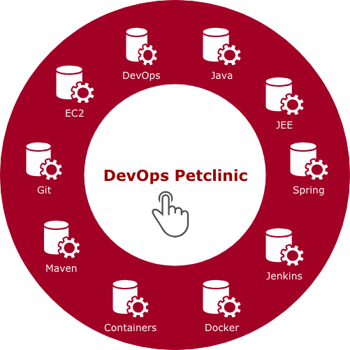
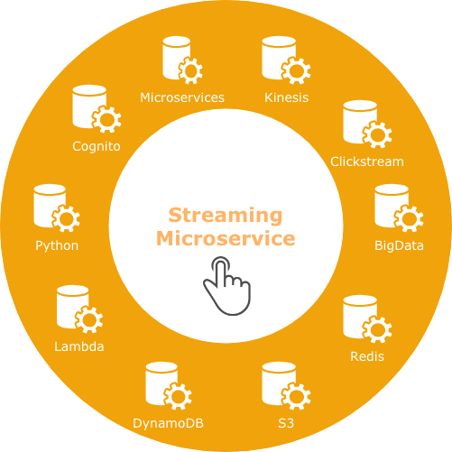

Doug Kobayashi
Hi I'm Doug, residing in hilly San Francisco. I work best at the intersection of technology and business, working closely with small teams and customers to turn fresh ideas into elegant and scalable solutions. I enjoy being hands-on, developing and delivering scalable solutions in the cloud and making sure customers are happy and successful.
Projects
Javascript
This project focuses on the hospitality industry and introduces the Hospitality Bot. As communication channels continue to grow (voice, text, messaging, social), the Hospitality Bot will assist in keeping up, managing, prioritizing and drawing insights from all of your guest communication. See the project on GitHub
Java

This project explores the DevOps world of continuous integration and delivery (CI/CD) and the latest in Java Spring Boot. The Petclinic is a Spring Boot application built using Maven. Using Jenkins automation, this sample application is continuously deployed onto AWS Docker container infrastructure. See the project on GitHub
Python

This project is inspired by the trend towards serverless computing and microservices. Using AWS Kinesis streams, in-memory caching technology Redis, and Data Visualization, this demonstrates how social media, market data feeds or web clickstream data can be routed into large-scale, real-time data ingestion and processing to offer valuable business insights. See the project on GitHub